Precision & measurement
Every figure checked, every reading exact. The starting point of cost certainty.

An independent brand for a respected name inside the KEO Group.
C-Quest competes for the most scrutinised developments on earth, the mega and giga projects reshaping the Gulf. On work at that scale the brand is part of the bid. It decides whether a firm reads as a serious, independent leader or as someone’s back office. C-Quest had the track record. The brand was telling a smaller story.
Established in 2015 on more than 60 years of KEO Group expertise, C-Quest had grown into one of the most respected cost consultancies in the region, and was named Cost Consultant of the Year in 2024. None of that showed up in the brand. The identity was fragmented, the online presence was thin, and everything still read as a department of the parent rather than the independent firm C-Quest had become.
When a serious firm introduces itself with weak materials, three things happen. It looks junior in rooms where it is anything but. It loses pricing power, because nothing on show justifies the premium. And it slows its own move to independence, because the market keeps filing it under someone else’s name. The work was ready to stand alone. The brand had to catch up.
Three outcomes had to be true. A clear, independent position within the KEO Group. A modern visual and verbal identity that honoured the legacy without hiding behind it. And a complete system the internal team could operate with confidence long after we left.
The starting point was a respected, award-winning consultancy introducing itself with a brand that looked like everyone else’s. No position to hold, no presence of its own, and nothing that signalled the scale of the projects behind the name.

C-Quest sells financial certainty on projects where a rounding error runs to millions. The whole firm turns on accuracy, so we built the brand on accuracy itself. Rather than reach for the usual language of trust, we took the instrument that defines the work, the surveyor’s crosshair, and made it the centre of the identity. Position, voice and visual system all resolve to one idea the firm could stand behind in any room. Strategic Cost Solutions.
The crosshair is read the same way wherever it appears. In surveying, construction and cost consultancy it means accuracy, balance and technical control, the act of taking a precise reading before anything is committed. We took that mark, the reticle at the centre of every measuring instrument, and built the C-Quest identity from it. Repeated across a measured grid, one symbol becomes a whole brand pattern. It does not decorate the brand. It is the brand.
A symbol only works when everyone reads it the same way. The crosshair carries four meanings at once, each one true to how C-Quest works. They became the foundation the rest of the system was built on.
Every figure checked, every reading exact. The starting point of cost certainty.
A fixed point inside complex projects, showing where attention belongs.
Order held under pressure. The discipline that keeps a budget intact.
The relationships across a project, from first estimate to final account.
A pattern this strong can take over a page. We set one rule to stop that. The crosshair belongs at the edges, guiding the eye inward and holding a calm, clear space for the content. A shallow gradient softens it where it meets the message, so it adds authority instead of noise.
On the live platform the rule does its work. The pattern frames the headline and the project imagery, then steps back so the message carries.

We did not pick a direction on taste. We developed three complete systems and took each far enough to live: the mark, the type, the colour logic, the imagery language and real application. Then we chose on evidence, not preference.
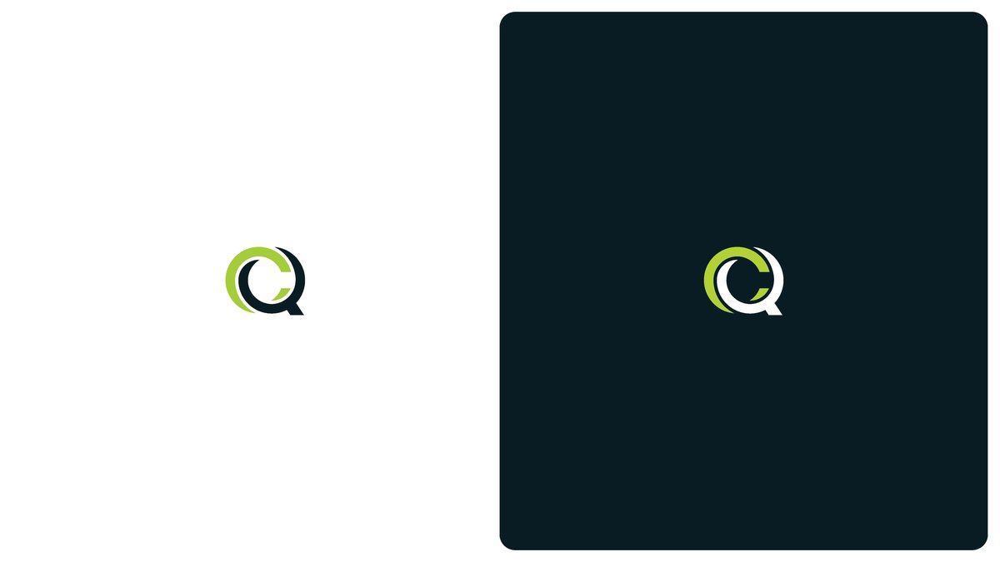
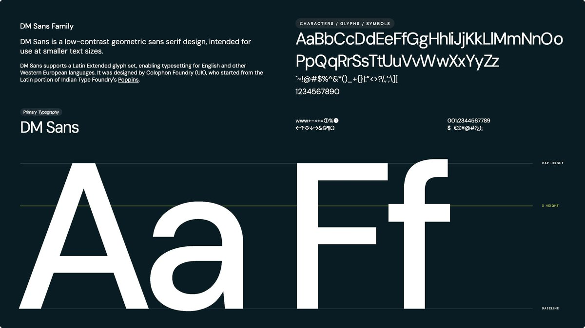
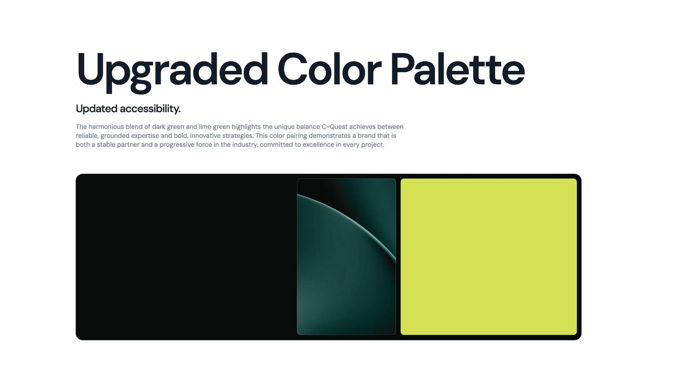
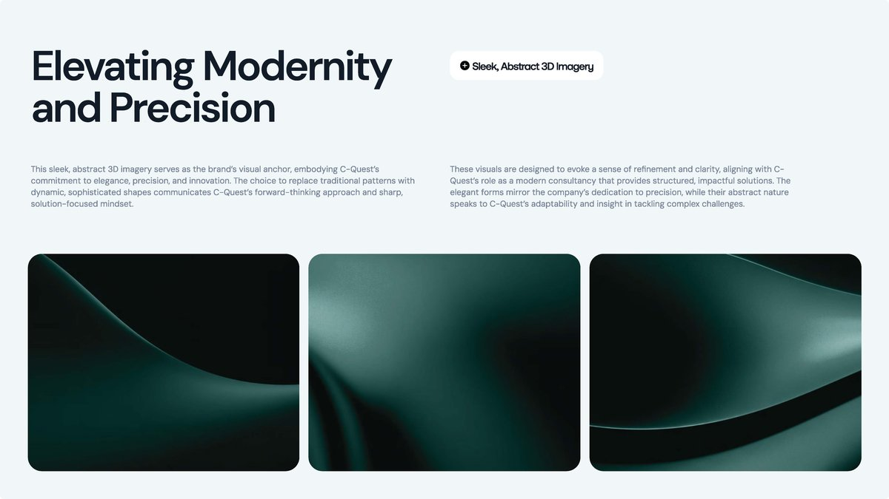
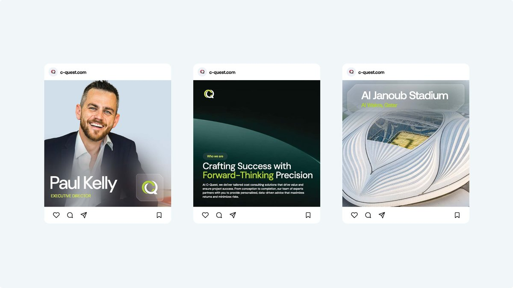
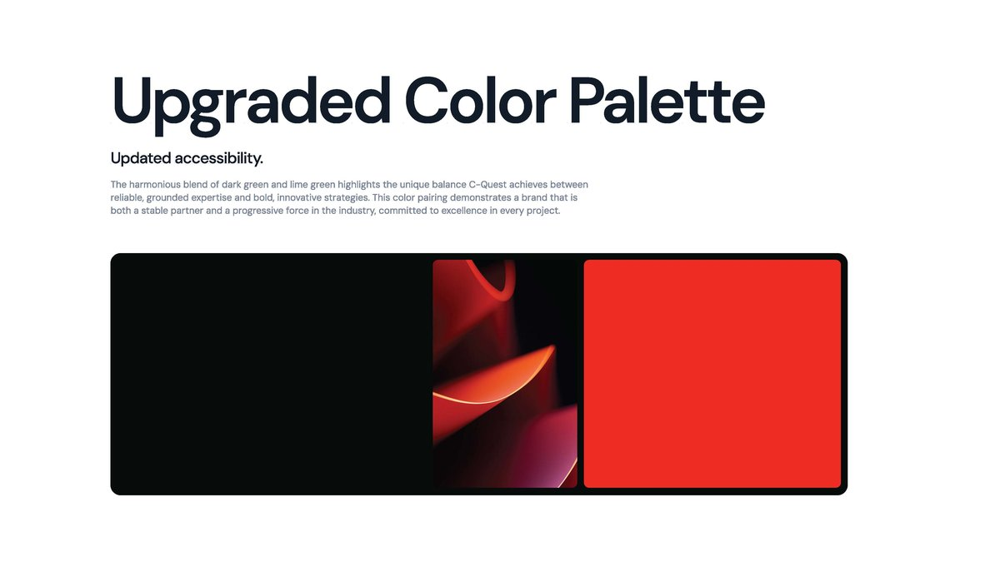
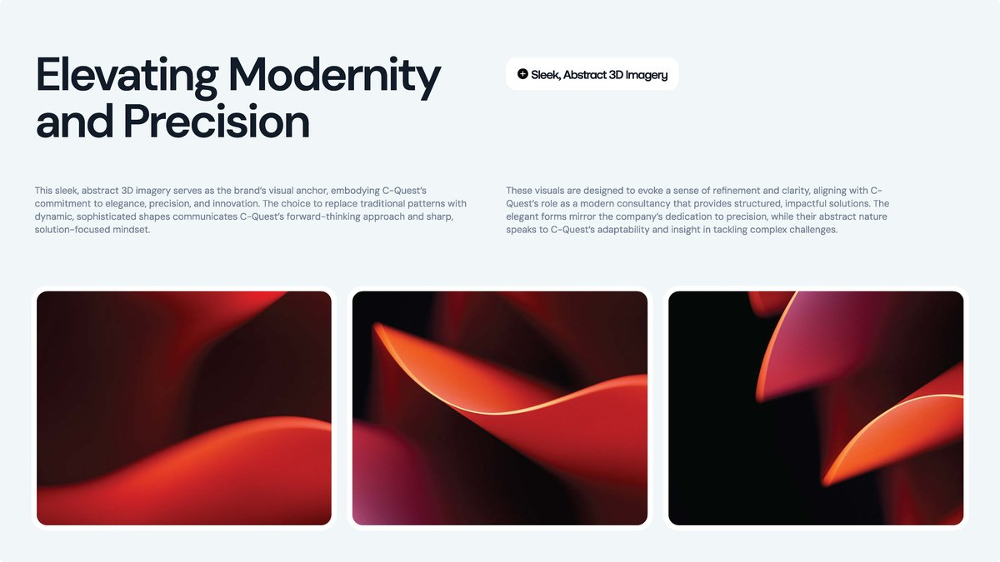
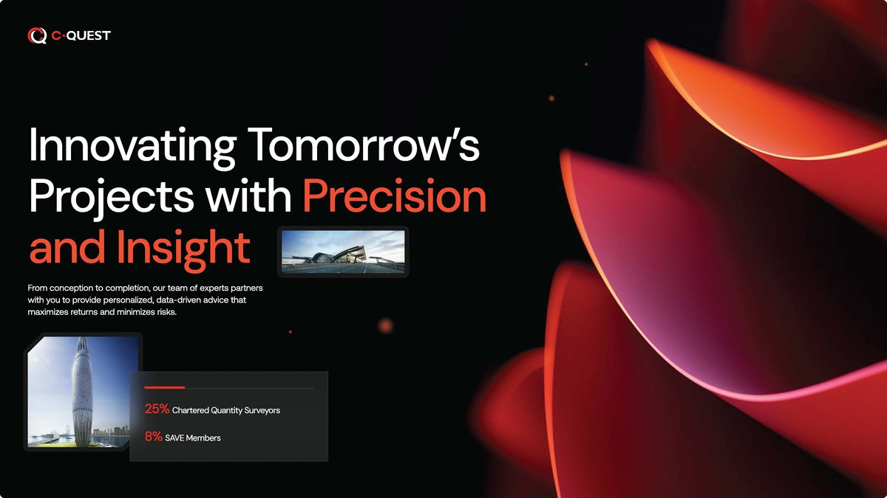
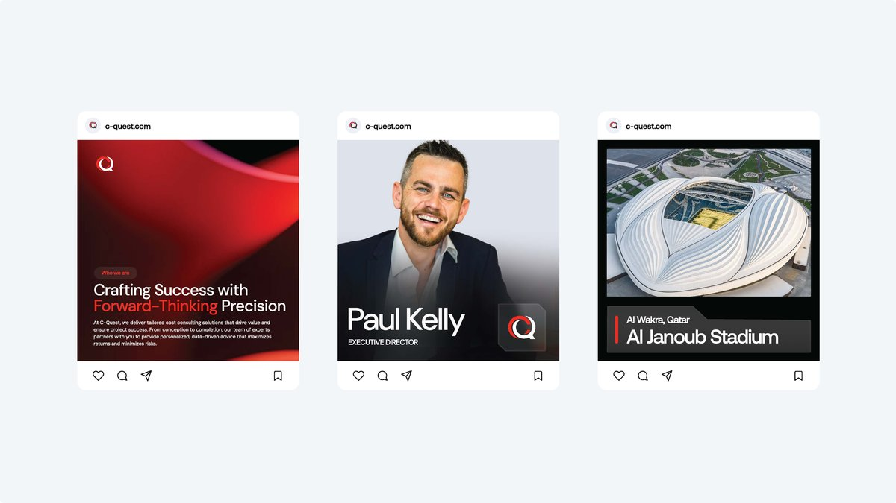
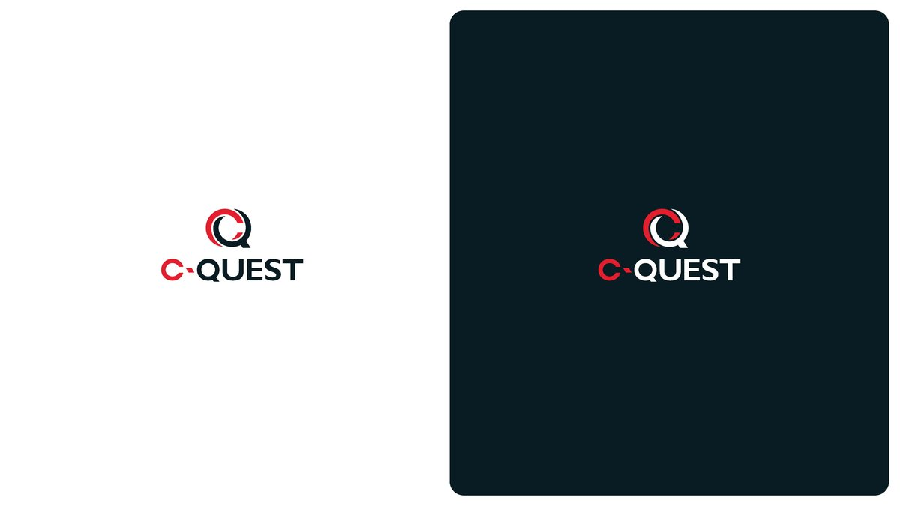
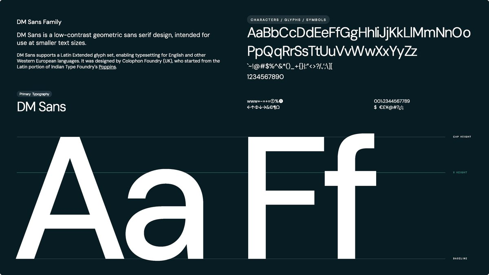
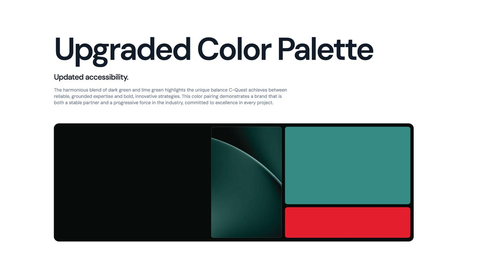
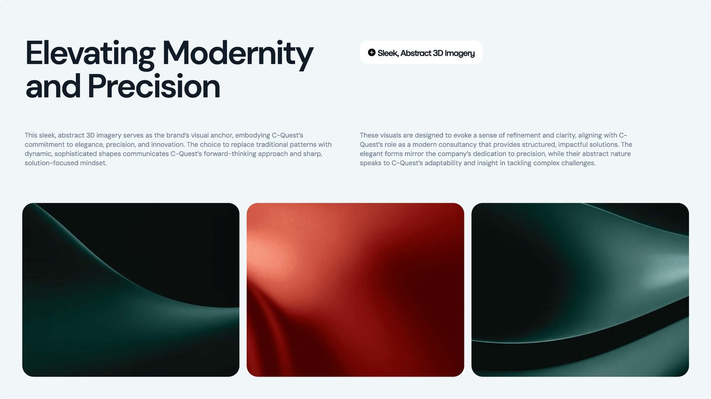
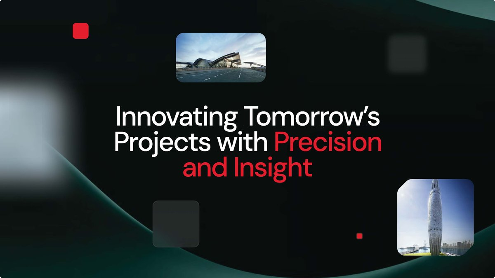
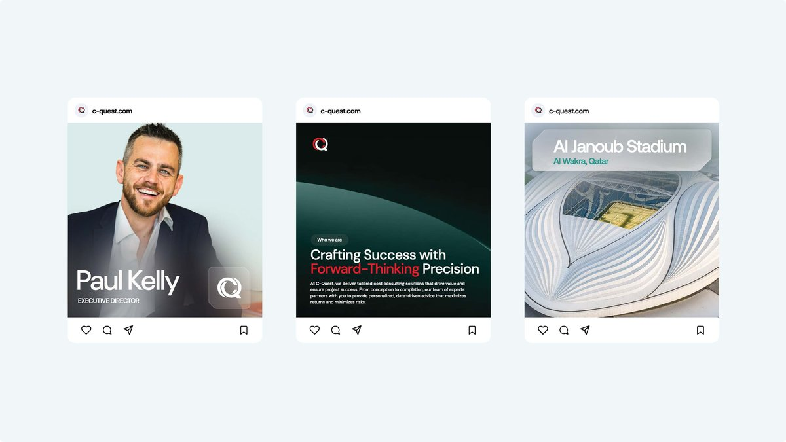
Three resolved systems, not three sketches. We pressure-tested each against the position, the market and everyday use. The red direction carried the most conviction and the clearest read at every size. We refined it into the final system, then proved the call with testing.
A brand built on precision could not ship the framing rule on opinion. We ran the core pattern through heatmap and contrast-grid testing at two strengths. At full strength it competed with the content and clarity scored 56. Pulled back to a quarter, the hierarchy held and clarity rose to 63, with reader focus unchanged at 78. The pattern ships at the level the data supported, not the one that looked busiest.


A brand earns its keep the moment it leaves the screen, a card handed across a table on a project worth billions. The pattern is debossed, quiet and precise, so the firm reads as serious before a word is spoken.

The new website turns the system into a clean, modular platform. It states the position plainly, then scales into project and sector pages as the portfolio grows.


C-Quest works on developments you can see from space. The brand had to read at that size, on hoardings, signage and environments, without losing the precision that defines it.


An editable social and activation kit lets the marketing team run the brand day to day, holding the standard at the smallest size it will ever appear.


Two image rules carry the brand. Projects are framed for form, geometry and light. People are shot natural and unposed, the human side of a precise business.


The brand is not a logo and a colour. It is six connected categories: core identity, stationery, presentation and business tools, the digital platform, the imagery system, and a social and activation kit. Each is built so the team runs it without us.

C-Quest now walks into the room as what it is, an independent leader and the equal of the projects it stands behind. The brand is consistent across every channel, owned by the team, and built to scale with the business. It reads as serious where it used to read as junior, it carries a premium it could not hold before, and it gives a firm with sixty years behind it a story that finally matches its standing.
It is a million times better than our current website.
Every engagement starts with the Brand Alignment Diagnostic, a fixed first step that scores your brand against the business and shows what to fix first.